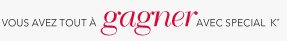

|

Nous avons envoyé ce courriel à l'adresse _EMAIL__, qui a été utilisée pour offrir un abonnement aux bulletins, aux
événements et aux offres de Special K*. Si vous avez reçu ce message par erreur ou si vous souhaitez mettre un terme
à votre abonnement, cliquez sur
Annulation de l'abonnement
Pour passer en revue et gérer tous vos abonnements avec Kellogg, rendez-vous sur Mon compte.
Si vous préférez vous désabonner par courrier postal, veuillez présenter votre requête – mentionnant votre adresse
électronique et l'abonnement auquel vous souhaitez mettre fin – à:
Kellogg Canada INC., 5350 Creekbank Rd., Mississuaga, ON, L4W 551
†Gratuit avec achat. Jusqu'à épuisement des stocks.
*© 2013, marque de commerce de Kellogg Company utilisée sous licence par Kellogg Canada Inc.
Politique sur la protection de la vie privée |
Avis légaux
|
|